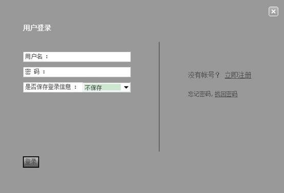
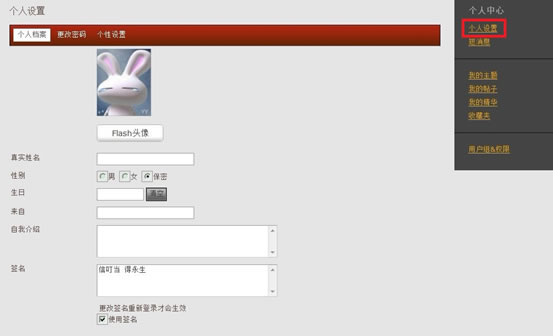
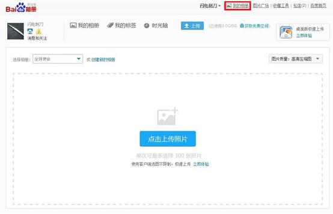
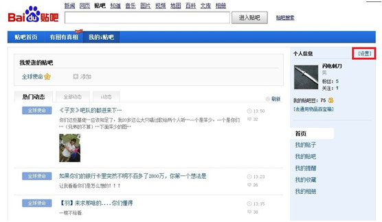
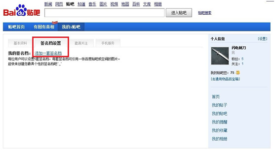
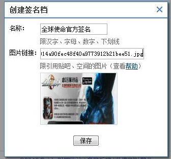
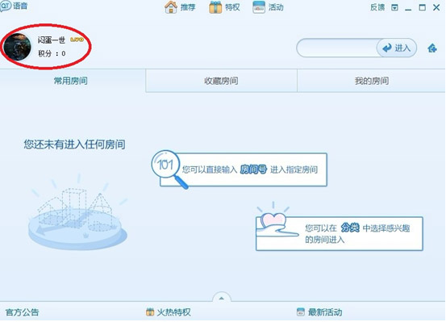
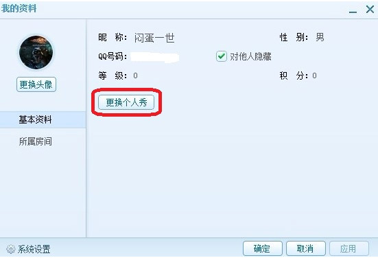
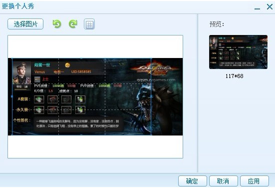

1. 首先进入bbs.qqsm.com登陆您的账号：

2. 点击进入“用户中心”：
3. 点击右侧“个人设置”，编辑您的论坛签名：

4. 复制图片地址进入签名档，勾选“使用签名”，最后点击“提交”：
1. 首先登陆百度贴吧首页，登陆账号：
2. 进入“我的相册”，上传您下载好的名片：

3. 返回贴吧首页，点击进入“我的i贴吧”：
4. 点击进入个人信息“设置“：

5. 点击“签名档设置”再点击“添加一套签名档”：

6. 编辑您的签名档名称，并将相册中签名图片的链接复制其中：

1. 首先登陆QT语音软件；
2. 点击自己的头像：

3. 点击右侧的“更换个人秀“按钮：

4. 点击左上角的“选择图片“按钮，选择你下载的名片，调整合适的大小后点击右下角的”确定“按钮将其保存：
